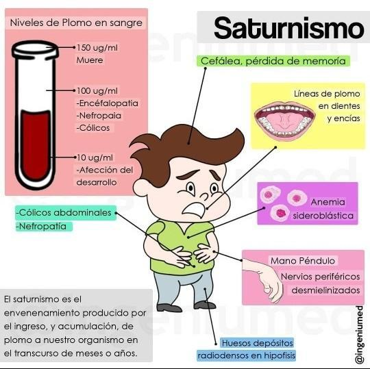
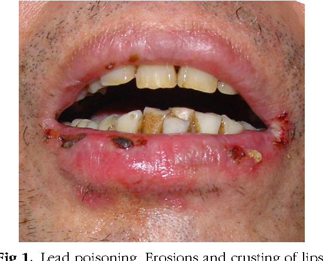

Conocer Inflamable como...
El plomo se acumula en el cuerpo humano (en la sangre, los tejidos y los huesos) en proporción a la cantidad de plomo que se encuentra en el medio ambiente. Puede causar un gran número de trastornos de salud; según la Agencia de Protección Ambiental de los Estados Unidos, los efectos van desde “problemas de comportamiento y discapacidades de aprendizaje, hasta convulsiones y muerte.” Es un veneno que afecta el cerebro, los riñones y el sistema nervioso de muchas maneras sutiles, incluso a niveles bajos. La exposición extremadamente alta al plomo puede “causar encefalopatía y muerte, dosis más bajas causan retraso severo, y dosis más bajas conducen a problemas escolares, cambios pequeños pero significativos en el CI, y otras medidas de la función del sistema nervioso central.”
"Hace un tiempo, dos mujeres se quedaron ciegas. Eso podría deberse a la contaminación.” - un doctor de Inflamable

